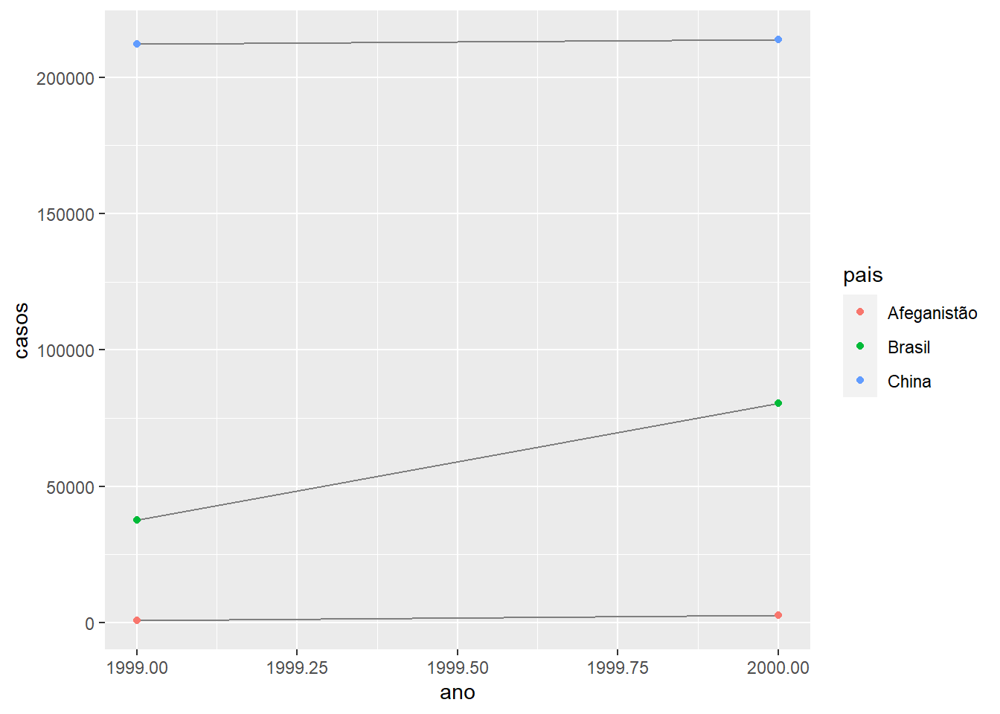

Chapter 7 12 - Tidy data
7.1 12.1 Introduction
Sessão sem códigos.
7.2 12.2 Tidy data
## # A tibble: 6 x 4
## pais ano casos populacao
## <chr> <int> <int> <int>
## 1 Afeganistão 1999 745 19987071
## 2 Afeganistão 2000 2666 20595360
## 3 Brasil 1999 37737 172006362
## 4 Brasil 2000 80488 174504898
## 5 China 1999 212258 1272915272
## 6 China 2000 213766 1280428583## # A tibble: 12 x 4
## pais ano tipo contagem
## <chr> <int> <chr> <int>
## 1 Afeganistão 1999 casos 745
## 2 Afeganistão 1999 população 19987071
## 3 Afeganistão 2000 casos 2666
## 4 Afeganistão 2000 população 20595360
## 5 Brasil 1999 casos 37737
## 6 Brasil 1999 população 172006362
## 7 Brasil 2000 casos 80488
## 8 Brasil 2000 população 174504898
## 9 China 1999 casos 212258
## 10 China 1999 população 1272915272
## 11 China 2000 casos 213766
## 12 China 2000 população 1280428583## # A tibble: 6 x 3
## pais ano taxa
## <chr> <int> <chr>
## 1 Afeganistão 1999 745/19987071
## 2 Afeganistão 2000 2666/20595360
## 3 Brasil 1999 37737/172006362
## 4 Brasil 2000 80488/174504898
## 5 China 1999 212258/1272915272
## 6 China 2000 213766/1280428583## # A tibble: 3 x 3
## pais `1999` `2000`
## <chr> <int> <int>
## 1 Afeganistão 745 2666
## 2 Brasil 37737 80488
## 3 China 212258 213766## # A tibble: 3 x 3
## pais `1999` `2000`
## <chr> <int> <int>
## 1 Afeganistão 19987071 20595360
## 2 Brasil 172006362 174504898
## 3 China 1272915272 1280428583## # A tibble: 6 x 5
## pais ano casos populacao taxa
## <chr> <int> <int> <int> <dbl>
## 1 Afeganistão 1999 745 19987071 0.373
## 2 Afeganistão 2000 2666 20595360 1.29
## 3 Brasil 1999 37737 172006362 2.19
## 4 Brasil 2000 80488 174504898 4.61
## 5 China 1999 212258 1272915272 1.67
## 6 China 2000 213766 1280428583 1.67## # A tibble: 2 x 2
## ano n
## <int> <int>
## 1 1999 250740
## 2 2000 296920library(ggplot2)
ggplot(tabela1, aes(ano, casos)) +
geom_line(aes(group = pais), colour = "grey50") +
geom_point(aes(colour = pais))
7.3 12.3 Pivoting
7.3.1 12.3.1 Longer
## # A tibble: 3 x 3
## pais `1999` `2000`
## <chr> <int> <int>
## 1 Afeganistão 745 2666
## 2 Brasil 37737 80488
## 3 China 212258 213766## # A tibble: 6 x 3
## pais ano casos
## <chr> <chr> <int>
## 1 Afeganistão 1999 745
## 2 Afeganistão 2000 2666
## 3 Brasil 1999 37737
## 4 Brasil 2000 80488
## 5 China 1999 212258
## 6 China 2000 213766## # A tibble: 6 x 3
## pais ano populacao
## <chr> <chr> <int>
## 1 Afeganistão 1999 19987071
## 2 Afeganistão 2000 20595360
## 3 Brasil 1999 172006362
## 4 Brasil 2000 174504898
## 5 China 1999 1272915272
## 6 China 2000 1280428583tidy4a <- tabela4a %>%
pivot_longer(c(`1999`, `2000`), names_to = "ano", values_to = "casos")
tidy4b <- tabela4b %>%
pivot_longer(c(`1999`, `2000`), names_to = "ano", values_to = "populacao")
left_join(tidy4a, tidy4b)## Joining, by = c("pais", "ano")## # A tibble: 6 x 4
## pais ano casos populacao
## <chr> <chr> <int> <int>
## 1 Afeganistão 1999 745 19987071
## 2 Afeganistão 2000 2666 20595360
## 3 Brasil 1999 37737 172006362
## 4 Brasil 2000 80488 174504898
## 5 China 1999 212258 1272915272
## 6 China 2000 213766 12804285837.3.2 12.3.2 Wider
## # A tibble: 12 x 4
## pais ano tipo contagem
## <chr> <int> <chr> <int>
## 1 Afeganistão 1999 casos 745
## 2 Afeganistão 1999 população 19987071
## 3 Afeganistão 2000 casos 2666
## 4 Afeganistão 2000 população 20595360
## 5 Brasil 1999 casos 37737
## 6 Brasil 1999 população 172006362
## 7 Brasil 2000 casos 80488
## 8 Brasil 2000 população 174504898
## 9 China 1999 casos 212258
## 10 China 1999 população 1272915272
## 11 China 2000 casos 213766
## 12 China 2000 população 1280428583## # A tibble: 6 x 4
## pais ano casos população
## <chr> <int> <int> <int>
## 1 Afeganistão 1999 745 19987071
## 2 Afeganistão 2000 2666 20595360
## 3 Brasil 1999 37737 172006362
## 4 Brasil 2000 80488 174504898
## 5 China 1999 212258 1272915272
## 6 China 2000 213766 12804285837.4 12.4 Separating and uniting
7.4.1 12.4.1 Separate
## # A tibble: 6 x 3
## pais ano taxa
## <chr> <int> <chr>
## 1 Afeganistão 1999 745/19987071
## 2 Afeganistão 2000 2666/20595360
## 3 Brasil 1999 37737/172006362
## 4 Brasil 2000 80488/174504898
## 5 China 1999 212258/1272915272
## 6 China 2000 213766/1280428583## # A tibble: 6 x 4
## pais ano casos populacao
## <chr> <int> <chr> <chr>
## 1 Afeganistão 1999 745 19987071
## 2 Afeganistão 2000 2666 20595360
## 3 Brasil 1999 37737 172006362
## 4 Brasil 2000 80488 174504898
## 5 China 1999 212258 1272915272
## 6 China 2000 213766 1280428583## # A tibble: 6 x 4
## pais ano casos populacao
## <chr> <int> <chr> <chr>
## 1 Afeganistão 1999 745 19987071
## 2 Afeganistão 2000 2666 20595360
## 3 Brasil 1999 37737 172006362
## 4 Brasil 2000 80488 174504898
## 5 China 1999 212258 1272915272
## 6 China 2000 213766 1280428583## # A tibble: 6 x 4
## pais ano casos populacao
## <chr> <int> <int> <int>
## 1 Afeganistão 1999 745 19987071
## 2 Afeganistão 2000 2666 20595360
## 3 Brasil 1999 37737 172006362
## 4 Brasil 2000 80488 174504898
## 5 China 1999 212258 1272915272
## 6 China 2000 213766 1280428583## # A tibble: 6 x 4
## pais seculo ano taxa
## <chr> <chr> <chr> <chr>
## 1 Afeganistão 19 99 745/19987071
## 2 Afeganistão 20 00 2666/20595360
## 3 Brasil 19 99 37737/172006362
## 4 Brasil 20 00 80488/174504898
## 5 China 19 99 212258/1272915272
## 6 China 20 00 213766/12804285837.4.2 12.4.2 Unite
## # A tibble: 6 x 3
## pais novo taxa
## <chr> <chr> <chr>
## 1 Afeganistão 19_99 745/19987071
## 2 Afeganistão 20_00 2666/20595360
## 3 Brasil 19_99 37737/172006362
## 4 Brasil 20_00 80488/174504898
## 5 China 19_99 212258/1272915272
## 6 China 20_00 213766/1280428583## # A tibble: 6 x 3
## pais novo taxa
## <chr> <chr> <chr>
## 1 Afeganistão 1999 745/19987071
## 2 Afeganistão 2000 2666/20595360
## 3 Brasil 1999 37737/172006362
## 4 Brasil 2000 80488/174504898
## 5 China 1999 212258/1272915272
## 6 China 2000 213766/12804285837.4.3 12.5 Missing values
Não usa bases de dados que está no pacote dados.
7.5 12.6 Case Study
## # A tibble: 7,240 x 59
## pais iso2 iso3 ano novos_fpp_h014 novos_fpp_h1524
## <chr> <chr> <chr> <int> <int> <int>
## 1 Afeg~ AF AFG 1980 NA NA
## 2 Afeg~ AF AFG 1981 NA NA
## 3 Afeg~ AF AFG 1982 NA NA
## 4 Afeg~ AF AFG 1983 NA NA
## 5 Afeg~ AF AFG 1984 NA NA
## 6 Afeg~ AF AFG 1985 NA NA
## 7 Afeg~ AF AFG 1986 NA NA
## 8 Afeg~ AF AFG 1987 NA NA
## 9 Afeg~ AF AFG 1988 NA NA
## 10 Afeg~ AF AFG 1989 NA NA
## # ... with 7,230 more rows, and 53 more variables:
## # novos_fpp_h2534 <int>, novos_fpp_h3544 <int>,
## # novos_fpp_h4554 <int>, novos_fpp_h5564 <int>,
## # novos_fpp_h65 <int>, novos_fpp_m014 <int>,
## # novos_fpp_m1524 <int>, novos_fpp_m2534 <int>,
## # novos_fpp_m3544 <int>, novos_fpp_m4554 <int>,
## # novos_fpp_m65 <int>, novos_fpn_h014 <int>,
## # novos_fpn_h1524 <int>, novos_fpn_h2534 <int>,
## # novos_fpn_h3544 <int>, novos_fpn_h4554 <int>,
## # novos_fpn_h5564 <int>, novos_fpn_h65 <int>,
## # novos_fpn_m014 <int>, novos_fpn_m1524 <int>,
## # novos_fpn_m2534 <int>, novos_fpn_m3544 <int>,
## # novos_fpn_m4554 <int>, novos_fpn_m5564 <int>,
## # novos_fpn_m65 <int>, novos_ep_h014 <int>,
## # novos_ep_h1524 <int>, novos_ep_h2534 <int>,
## # novos_ep_h3544 <int>, novos_ep_h4554 <int>,
## # novos_ep_h5564 <int>, novos_ep_h65 <int>,
## # novos_ep_m014 <int>, novos_ep_m1524 <int>,
## # novos_ep_m2534 <int>, novos_ep_m3544 <int>,
## # novos_ep_m4554 <int>, novos_ep_m5564 <int>,
## # novos_ep_m65 <int>, novos_recaida_h014 <int>,
## # novos_recaida_h1524 <int>,
## # novos_recaida_h2534 <int>,
## # novos_recaida_h3544 <int>,
## # novos_recaida_h4554 <int>,
## # novos_recaida_h5564 <int>, novos_recaida_h65 <int>,
## # novos_recaida_m014 <int>, novos_recaida_m1524 <int>,
## # novos_recaida_m2534 <int>,
## # novos_recaida_m3544 <int>,
## # novos_recaida_m4554 <int>,
## # novos_recaida_m5564 <int>, novos_recaida_m65 <int>dados_oms <- dados::dados_oms
who <- tidyr::who
dados_oms1 <- dados_oms %>% #Problema aqui! Porque nossa base tem 1 coluna a menos?
pivot_longer(
cols = novos_fpp_h014:novos_recaida_m65,
names_to = "chave",
values_to = "casos",
values_drop_na = TRUE
)
dados_oms1## # A tibble: 72,851 x 6
## pais iso2 iso3 ano chave casos
## <chr> <chr> <chr> <int> <chr> <int>
## 1 Afeganistão AF AFG 1997 novos_fpp_h014 0
## 2 Afeganistão AF AFG 1997 novos_fpp_h1524 10
## 3 Afeganistão AF AFG 1997 novos_fpp_h2534 6
## 4 Afeganistão AF AFG 1997 novos_fpp_h3544 3
## 5 Afeganistão AF AFG 1997 novos_fpp_h4554 5
## 6 Afeganistão AF AFG 1997 novos_fpp_h5564 2
## 7 Afeganistão AF AFG 1997 novos_fpp_h65 0
## 8 Afeganistão AF AFG 1997 novos_fpp_m014 5
## 9 Afeganistão AF AFG 1997 novos_fpp_m1524 38
## 10 Afeganistão AF AFG 1997 novos_fpp_m2534 36
## # ... with 72,841 more rowswho1 <- who %>%
pivot_longer(
cols = new_sp_m014:newrel_f65,
names_to = "key",
values_to = "cases",
values_drop_na = TRUE
)
who1## # A tibble: 76,046 x 6
## country iso2 iso3 year key cases
## <chr> <chr> <chr> <int> <chr> <int>
## 1 Afghanistan AF AFG 1997 new_sp_m014 0
## 2 Afghanistan AF AFG 1997 new_sp_m1524 10
## 3 Afghanistan AF AFG 1997 new_sp_m2534 6
## 4 Afghanistan AF AFG 1997 new_sp_m3544 3
## 5 Afghanistan AF AFG 1997 new_sp_m4554 5
## 6 Afghanistan AF AFG 1997 new_sp_m5564 2
## 7 Afghanistan AF AFG 1997 new_sp_m65 0
## 8 Afghanistan AF AFG 1997 new_sp_f014 5
## 9 Afghanistan AF AFG 1997 new_sp_f1524 38
## 10 Afghanistan AF AFG 1997 new_sp_f2534 36
## # ... with 76,036 more rows## # A tibble: 55 x 2
## chave n
## <chr> <int>
## 1 novos_ep_h014 1038
## 2 novos_ep_h1524 1026
## 3 novos_ep_h2534 1020
## 4 novos_ep_h3544 1024
## 5 novos_ep_h4554 1020
## 6 novos_ep_h5564 1015
## 7 novos_ep_h65 1018
## 8 novos_ep_m014 1032
## 9 novos_ep_m1524 1021
## 10 novos_ep_m2534 1021
## # ... with 45 more rows[Continuar]
Xie, Yihui. 2015. Dynamic Documents with R and Knitr. 2nd ed. Boca Raton, Florida: Chapman; Hall/CRC. http://yihui.name/knitr/.
———. 2020. Bookdown: Authoring Books and Technical Documents with R Markdown. https://github.com/rstudio/bookdown.